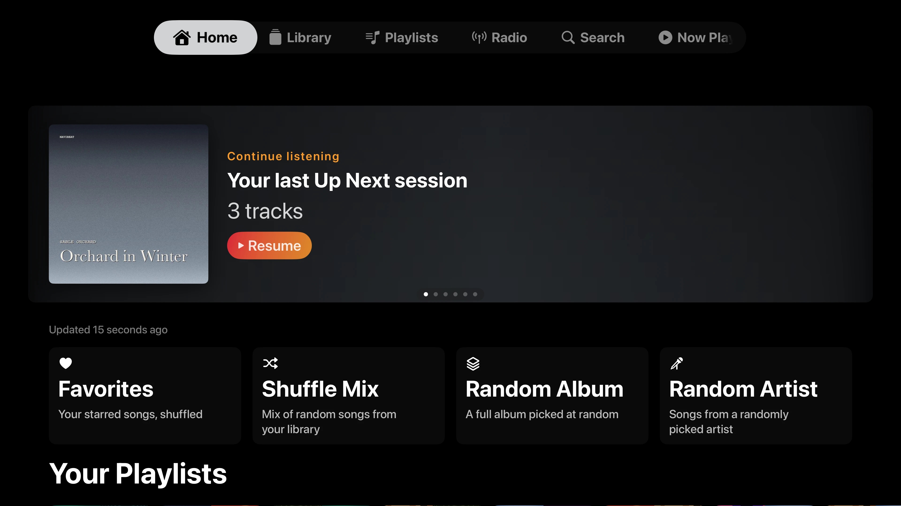
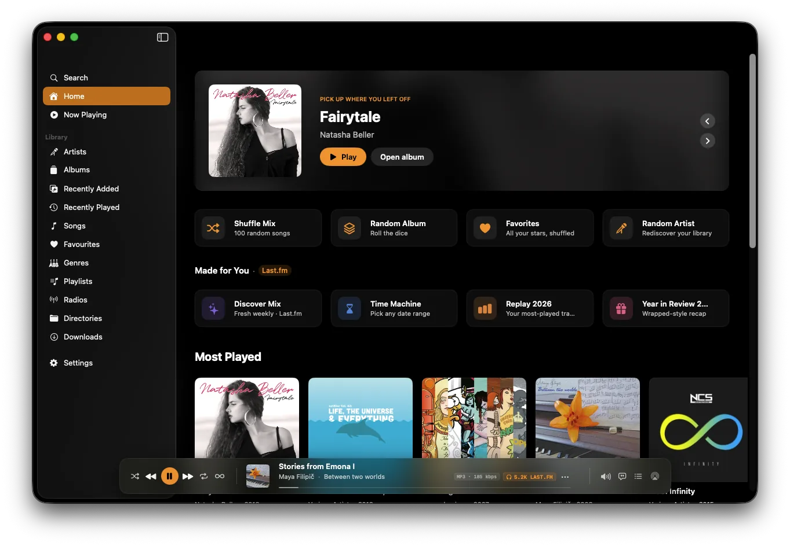
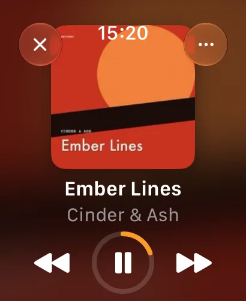
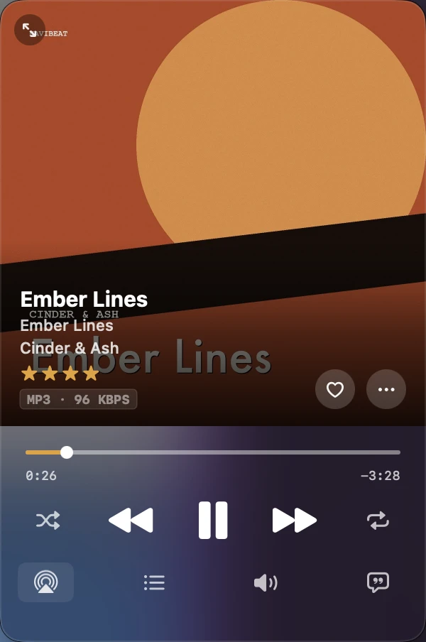

One purchase. Every device. Forever.
Buy NaviBeat once on any Apple device. It installs on the other four at no extra cost. $5.99, one time, no subscription, no per-platform fee, no “Pro” tier behind a paywall.
Pay once.
NaviBeat v1.1.3 · Live on the App Store
NaviBeat is a native Navidrome and OpenSubsonic player for Apple TV, Mac, iPhone, iPad, and Apple Watch. Now live on the App Store across all five platforms at $5.99, one purchase covers every device, forever.





One purchase. Every screen. Forever.
Featured Album hero, Quick Play shelves, full Siri Remote support, tuned for focus, not the cursor.

Pin-on-top, time-synced lyrics, Up Next queue, sleep timer, directories. Not Electron, not Catalyst.
Word-perfect time-sync. Smooth scroll. Tap any line to seek. Reads .lrc straight from your Navidrome.
Full-screen Now Playing on iPhone. Offline pinned playback on Watch. Run trails without the phone.
Buy NaviBeat once on any Apple device. It installs on the other four for free. No subscription, no per-platform fee.
Bring your own server
NaviBeat speaks the OpenSubsonic API. Any server that does the same will pair: drop in your URL and credentials, that is the whole setup.
Self-hosted, on a Raspberry Pi, NAS, VPS, or anywhere else. Your library never leaves the box you put it on. New to self-hosting? Start with Navidrome.
One purchase, five devices
What you get
Buy NaviBeat once on any Apple device. It installs on the other four at no extra cost. $5.99, one time, no subscription, no per-platform fee, no “Pro” tier behind a paywall.
Pay once.
Zero analytics. Zero tracking. Zero hidden services. NaviBeat doesn’t talk to anyone you didn’t sign in to. Optional Last.fm integration is opt-in and you’re in control.
Your server, your rules.
Not an Electron shell. Not a web wrapper. Each app is tuned for its screen: focus on tvOS, mouse on macOS, touch on iOS, crown on watchOS.
Tuned per screen.
Pin albums, playlists, or whole artists with their artwork and details, so you can browse and play fully offline. LRU cache with a size you set. Flights, subways, trails, spotty hotel Wi-Fi, the music keeps going.
Built for the road.
Custom HTTP headers for Cloudflare Access and Authelia, plus mTLS client certificates and Tailscale, all work out of the box. Your server stays private and reachable from anywhere, with no third-party relay, ever.
Your tunnel, covered.
Fresh from the workshop
NaviBeat is in very active development: the beta gets new builds near-daily, and these just landed.
Every screen is translated, and an in-app language picker lets you force any of them, even on Apple TV, where the system offers no per-app language setting at all.
Don’t see yours? Tell me which one, and I’ll add it.
Deset jezika. Zehn Sprachen. Dix langues.
A 24-hour listening clock, a weekday heatmap, and your top artists, albums, and songs, with a week, month, and year switcher. Built from your own play history, rendered beautifully on iPhone, iPad, and Mac.
Know your own taste.
Shape the sound with a full ten-band equalizer and presets, riding on NaviBeat’s selectable high-fidelity audio engine. Pick the engine in Settings, dial in your curve, and it follows your playback.
Your ears, your curve.
Sync songs, albums, artists, and playlists from your server to a Rockbox player: your server transcodes, the album art actually renders even on old hardware, playlists are written for you, and plays on the iPod sync back to your server as scrobbles. Two custom NaviBeat themes ride along. A Mac add-on.
Built on Rockbox, a wonderful volunteer-run open-source project that has kept old iPods playing for decades. We’re fans building on top of their work, not affiliated with the Rockbox project, and glad it exists.
Click wheel, meet self-hosting.
Voice search on CarPlay understands “play <your artist>” in any of the app’s languages, resolves it against your own library, and shows exactly what it heard when nothing matches. Eyes on the road, hands on the wheel.
Say it, hear it.
Tester reports regularly turn into fixes the same day. Want the newest features months before the App Store release? Join the beta, every platform is covered by one TestFlight link.
Report it today, test the fix tomorrow.
No cloud. No account. No telemetry.
NaviBeat is a client. Your music lives where it already does: a Raspberry Pi, a Synology, a home server under someone’s desk. We never see your library, your credentials, or a single play event. We couldn’t if we wanted to: the app has no backend. The only services NaviBeat ever talks to are the ones you sign in to: your Navidrome server, and optionally Last.fm. Read the privacy policy.
About the maker
NaviBeat is built and maintained by Nenad Jokic, one person in Belgrade. No team behind a wall, no investors to please, no analytics dashboard somewhere telling me what you listened to last night. The roadmap is shaped in the open by what self-hosters actually ask for: AirPlay routing, Cloudflare Access headers, sleep timer, time-synced lyrics, the things that came in through TestFlight and email.
NaviBeat is in serious, very active development. New TestFlight builds go out almost every day, with fixes and new features landing constantly, and beta testers get every improvement first. The roadmap moves fast because it is just me and the people who use it. If something is broken, you can write directly to me. I usually reply within a day.
Launch price
One purchase. Every device.
One purchase. Every device. Forever.
Beta program
If you are willing to share what you find, we would love to have you on the TestFlight group. iPhone, iPad, Mac, Apple TV, Apple Watch.
FAQ
From the App Store